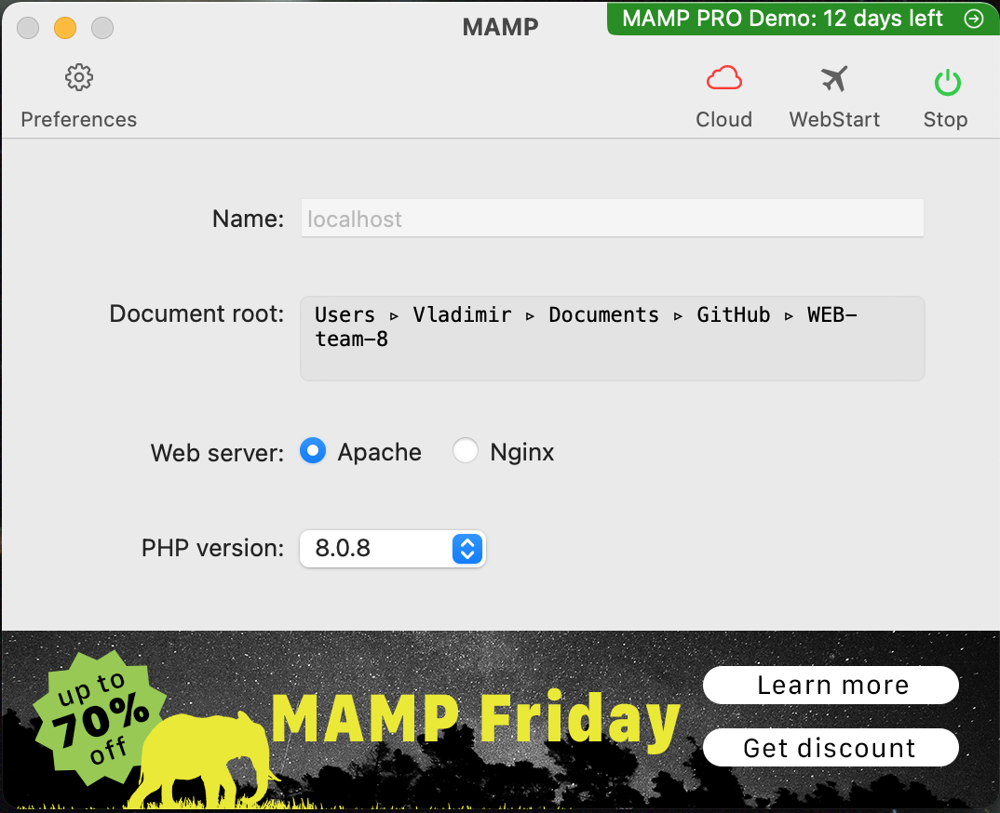
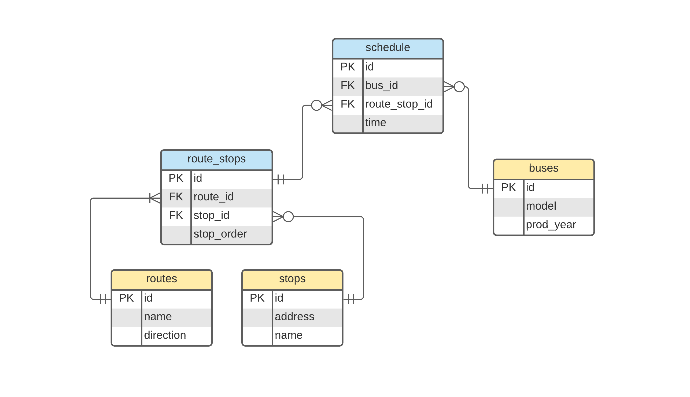
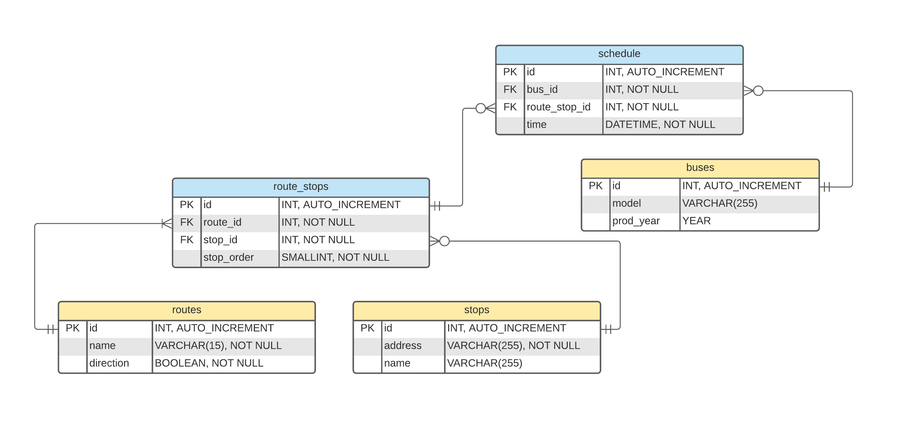
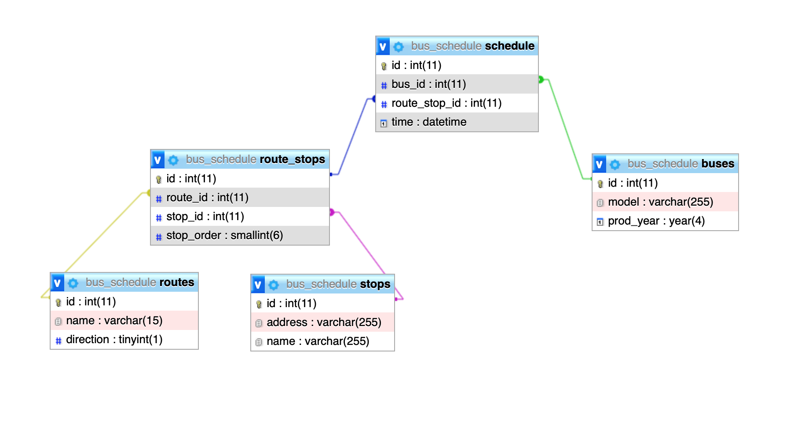
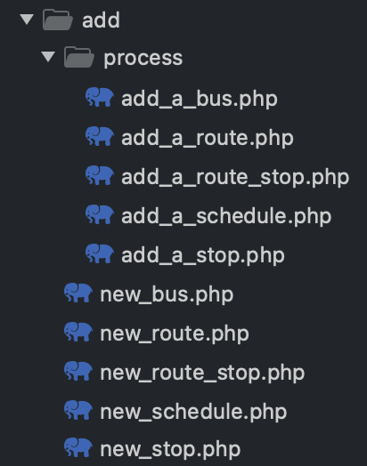
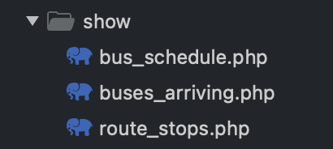
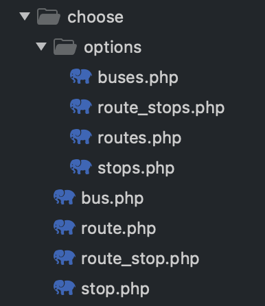

Фоков Володимир
Варіант 8
Посилання на застосунок:
Розклад руху автобусів.
Завантаження програмного комплексу
Я завантажив MAMP.

Класи об’єктів предметної області, дані про які будуть зберігатися у БД
У БД будуть зберігатися дані про розклад руху автобусів.
Це означає, що, як мінімум, повинні бути сутності автобуси та зупинки (buses, stops).
Також, різні автобуси об'єднані в групи - з однаковим маршрутом (номером автобусу),
тому створена сутність маршрути (routes).
Маршрут проходить через певні зупинки в певному порядку, тому можна створити асоціативну сутність
route_stops, яка буде поєднувати маршрути та зупинки, і також надавати порядковий номер кожній зупинці.
Нарешті, асоціативна сутність schedule реалізує зв'язок багато-до-багатьох між route_stops та buses.
Інфологічна модель

Нормалізація БД та Даталогічна модель

Реалізація БД в СУБД MySQL, використовуючи phpMyAdmin

Скрипти на PHP
- для внесення даних до БД:

Наприклад, add_a_bus.php
<?php
require_once __DIR__ . '/../../includes/database.php';
if (isset($_POST['addABus'])) {
// Getting input
$model = trim($_POST['model']);
$prod_year = trim($_POST['prod_year']);
if (empty($model)) {
$model = 'NULL';
} else {
$model = "'$model'";
}
if (empty($prod_year)) {
$prod_year = 'NULL';
} else {
$prod_year = "'$prod_year'";
}
// Query
$sql = "INSERT INTO buses (model, prod_year)
VALUES ($model, $prod_year)";
mysqli_query($conn, $sql);
// Message
if (mysqli_affected_rows($conn) > 0) {
echo '<p>Bus Successfully Added!</p>';
} else {
echo '<p>Bus was NOT ADDED!</p>';
echo '<p><b>MySQL Error:</b> ' . mysqli_error($conn) . '</p>';
}
}
echo '<a href="../new_bus.php">Go back</a>';
- для виведення даних на екран:

Наприклад, з файлу bus_schedule.php
...
// Output
if (! $result) {
echo "<p> <b>ERROR!</b> Could not execute: <br> $sql </p>";
echo '<p> <b>MySQL Error:</b> ' . mysqli_error($conn) . '</p>';
} elseif (mysqli_num_rows($result) == 0) {
echo "<p> No suitable results were found in the database for your request. </p>";
} else { ?>
<table>
<thead>
<tr>
<th>Time</th>
<th>Route</th>
<th>Stop order</th>
<th>Stop</th>
</tr>
</thead>
<tbody>
<?php table_body_from($result); ?>
</tbody>
</table>
<?php }
}?>
</body>
</html>
<?php
// Heading function
function heading($conn, $bus_id, $time_from, $time_to) {
$bus_info_sql = "SELECT *
FROM buses
WHERE id = '$bus_id'";
$bus_info = mysqli_fetch_assoc(mysqli_query($conn, $bus_info_sql));
$bus_show = "id: " . $bus_id
. ($bus_info['model'] ?
(", model: " . $bus_info['model']) : "")
. ($bus_info['prod_year'] ?
(", production year: " . $bus_info['prod_year']) : "");
echo "<h2> A schedule of the bus with the: <br> <u>$bus_show</u> </h2>";
} ?>
<!-- Returns the HTML code of the table body.
$result - is a mysqli object
-->
<?php
function table_body_from($result) {
while ($row = $result->fetch_assoc())
{ ?> <tr>
<td>
<?= implode('</td><td>', array_values($row)); ?></td>
</tr>
<?php
}
}?>
Ще приклад з файлу buses.php
Цей код вибирає всі автобуси та виводить їх варіантами в меню для вибора.
<?php
require_once __DIR__ . '/../../database.php';
$sql_buses = "SELECT * FROM buses";
$buses = mysqli_query($conn, $sql_buses);
while ($row = mysqli_fetch_assoc($buses))
{ echo "<option value=" . $row['id'] . ">"
. "id: " . $row['id']
. ($row['model'] ? (", model: " . $row['model']) : "")
. ($row['prod_year'] ? (", produced in: " . $row['prod_year']) : "")
. "</option>";
}
- для пошуку даних в БД:

Наприклад, ще з файлу bus_schedule.php
<?php
require_once __DIR__ . '/../includes/database.php';
require_once __DIR__ . '/../includes/helper_functions.php';
if (isset($_GET['showBusSchedule'])) {
// Getting input
$bus_id = $_GET['bus_id'];
$time_from = $_GET['time_from'];
$time_to = $_GET['time_to'];
heading($conn, $bus_id, $time_from, $time_to);
// Query
$sql = "SELECT
`schedule`.time,
CONCAT(routes.name, ': ', routes.direction) AS route,
route_stops.stop_order,
IFNULL(stops.name, stops.address) AS name
FROM
routes, stops, route_stops, `schedule`
WHERE
`schedule`.bus_id = $bus_id AND
(`schedule`.time BETWEEN '$time_from' AND '$time_to') AND
`schedule`.route_stop_id = route_stops.id AND
routes.id = route_stops.route_id AND
stops.id = route_stops.stop_id" ;
$result = mysqli_query($conn, $sql);
...